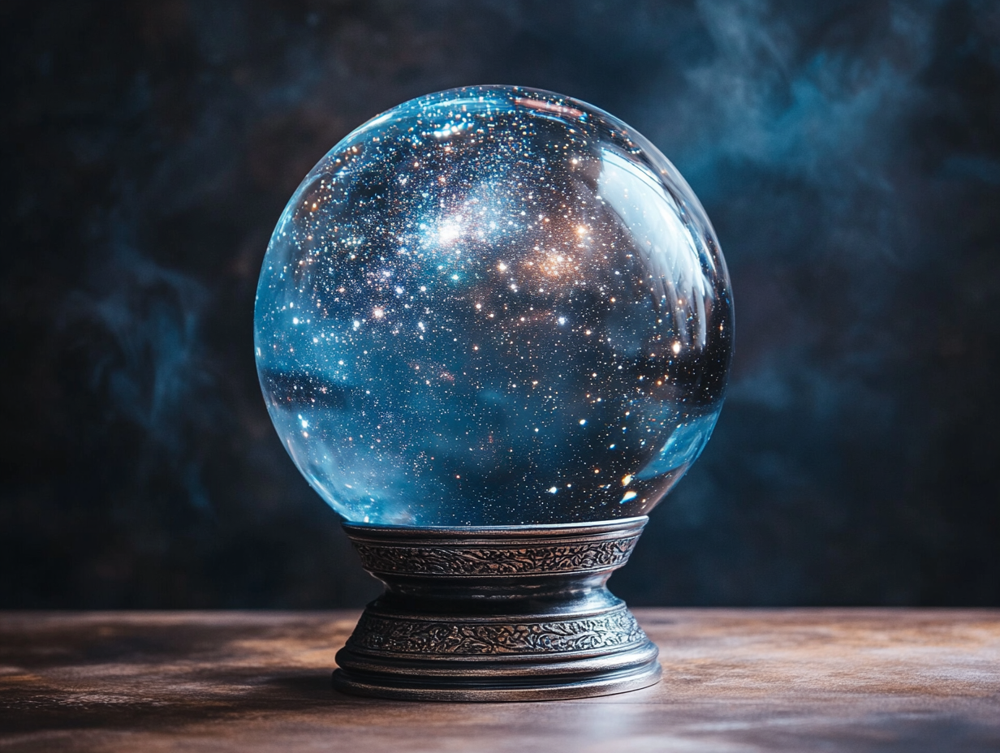

大圓滿-基的精髓
-
當我們以本體、自性和潛能或能量這樣的用詞來解釋基時，似乎是在對我們的真實狀態進行分析。
例如你們說，「鏡子的狀態是什麼？」你們可以說鏡子的潛能是清澈、透明和純淨的；但這並不
是說在我們的真實本性、我們的狀態之中清澈與透明在某些方面是不同的。我們可以解釋本體、
自性等等，但這並不是指不同的東西；而是顯現的不同面向和可能性——就像水晶球一樣。
-
水晶球的本質是純淨而透明的，沒有特定的顏色。如果你們把它放到紅顏色上然後看進去，
水晶球就會呈現紅色，因為那一刻水晶正處於紅色的空間。即使你們看到水晶是紅色的，但
這並不會改變它的本性。這是一個關於我們的潛能、真實本性是怎樣的一個例子，它有很多
方面，取決於聲、語、意各方面。如果你們多想到心智狀態，就會說本體，本體是空性，因
為它自始就是純淨的。沒有任何東西是真實的，但當你們說沒有任何東西時，並不是指完全
沒有任何東西，因為它還有它的潛能和顯現。我們的念頭之本性也是同樣的，你們不能發現
任何東西，只是空性而已，但念頭會持續升起。所以，運動、顯現被稱作“本性”，其本性是
明性。這是指如果有一面鏡子前面出現客體，那麼就會清晰地顯現出來。這種情況你們不能
說「空性」指的是什麼都沒有，因為是有些東西在這裡出現了。這是我們所認為的它的本性
，指具有自己功能的東西，具有它自己特有的功能或能量顯現，這就叫做「本性」。
-
例如，如果你们说“火的本性”，那就是热能；而如果你们说“水的本性”，那么水的本性就是湿润。
这意味着我们真正状态的特有功能是明性。明性是指当我们的感官与出现的客体发生接触时，所有
感官功能都是明性。当你们睁开眼睛时就会持续与客体发生接触。这是你们明性的一部分，但当它
为判断所局限因而散乱时，就不会作为明性而运作。你们看，比如说你们先看左侧然后迅速看一圈
到右侧；也许那里有很多树、很多人、水果、花朵，所有这些东西，你们可以看到所有的东西。你
们所见到的境相是什么？这就是明性。如果你们是迅速地看过，就不能进行判断，因为你们的判断
一定需要一些时间，你们没有足够的时间判断一切—这个是这个，那个是那个—而是你们获得了那个
境相而已。
-
如果你們在跳舞，正在迅速地旋轉，你們會有明性，但不會有判斷，這就是一個例子。所以當你們看到一些客體時，這只是你們明性的一部分，同樣，當你們聽到聲音時，那也是明性的一部分，但之後你們就會開始想，「哦，這個很美，那個不美。所以，這兩者被稱作查當（chagdang），查（chag）的意思是“執著”，而當（dang）的意思是“拒斥”或“瞋恨”，這兩者就好像是我們的兩條腿。我們用這兩條腿走路，要不接受（指執著），要不要拒絕，這樣我們就產生了負面業力。這就是說我們散亂了，否則就絕對不會為查（chag）和當（dang）所局限。當我們散亂時就會為煩惱和執著所局限，這樣關於明性就會出現問題。
-
但如果你們處於明覺之中，你就不會有明性的問題，儘管明性會進入時間並且會有判斷，但你們同時還可以保持覺知。這就是修行者和普通人之間的差別。如果你們真的是修行者就會以這種方式去覺知，即使會有一些問題出現。你們不會有那麼重的情緒，因為你們不會散亂，也不會受到限制。這就是我們所說的我們對基的體驗。另外，你們看，我們的狀況是在運動和寂靜狀態或空性之間變化的；一直這樣持續沒有間斷，這就叫做「能量」。或者這可以被當作我們潛能的一個面向；藏文裡我們稱之為通傑（thugje）。你們看，在噶饒多傑祈請文中你們學習過這些詞，囊沃（ngowo）、讓止（rangzhin）、通傑（thugje），即「本體、自性和能量」。這三者與基的原則相關—是我們基的三個面向。所以它們又被稱為作基的三智慧。如果你們有這個體驗，就被稱為三身——三個層面，就是著名的法身、報身、化身。
-
當你們學習大乘經典，在談到證悟者的品質時，似乎這些特質沒有任何與我們的普通狀態相關的。事實上，如果你們要真正了解法身、報身、化身是什麼，那麼就必須要透過三身或這些層面來了解你們的基。我們有基的三個層面，道的三個層面，以及果的三個層面。
-
一般人們只會會談起果的三個層面，似乎當我們說佛陀釋迦摩尼或一些其他的佛或者證悟眾生具有法、報、化三身的品質時，這些品質的呈現只是與描繪他們的雕像或畫像相關，如普賢王如來或金剛持。這樣如果有人問，「這是什麼？」就會有人回答說，「哦，這是法身。」而像金剛薩埵這樣的寂靜顯現，或者像千秋黑路噶或者大威德這樣的忿怒顯現，或時輪金剛和喜金剛這樣的喜悅顯現，都被表現為具有報身的品質。但你們看，我們自己卻沒有任何與時輪金剛相似的地方，看起來其實與他沒有任何關係。這就是為什麼人們會有這樣的想法，認為報身總會是一位證悟的眾生。然後又有人會問，「化身是什麼呢？」我們說，「化身就是像佛陀釋迦摩尼那樣的人，他顯現成人類這樣的肉體。」顯現為人是指與人類有具體溝通的可能性，因為他可以說人類的語言、與人類溝通並給予口傳教授。他的弟子們來見佛陀，聆聽他的教導並記下來，說，「我們在某天遇到了佛陀，他這樣、那樣說了。」佛陀教授了一些東西並總結了他的教授，這些最終被記錄了下來—這就是經典的出現。 「經典」的真正意義是一個講道或教授的總結。
-
我們想像佛陀這種顯現就是化身，但如果我們將佛陀釋迦摩尼和我們自己的狀態進行比較的話，就會發現與我們毫不相干，因為佛陀的顯現事實上是果。但每個人都會有那個果，因為每個人都有基底。三個層面真正的基是本體、自性和能量，而每個人都具有基。我們只具有潛能和特性是不夠的，我們需要有對基本身的體驗。當我們有了那個體驗，就要努力處於那個體驗之中，就是說要處於基的三身之中。
-
我們的本體—自本初以來（無始以來）即為純淨的空性—就是法身，但我們如何證得那個法身，如何顯現它呢？我們運用那個體驗並於道上進行修法。在道上我們主要運用的是三種體驗：空性、明性和覺受，它們分別與我們身、語、意三門相關。空性的經驗與我們的心相關，而心與我們基之本體的經驗有關。所以在道上我們處於空性的體驗之中，透過處於空性之中我們會發現空性之明覺。這就是法身之道上最重要的要點。法身不只是果的概念，也是指有實修。從最開始你們就需要具有基的體驗，然後在道上有實修，最後我們會獲得法身之果的證悟。同樣，我們也能夠證悟報身：所有的運動，所有升起在心中的感官接觸，所有這些都是我們明性的一部分。我們了解自己的本性是明性，也具有能量功能的體驗，這就是報身，我們也會在道上運用它。
-
因為我們不只是處於寂靜狀態或空性之中，我們會發現運動是自己真實本性的一部分，沒有什麼不對的，所以我們要運用它並試圖進入其中。你們記得，當我們談到米尤瓦（miyowa）—第二禪觀—時，就是說我們融攝了運動。運動與明性的經驗與我們的能量有關。例如，當你們進行一些密乘修法的轉化方法時，首先是要處於一種無限的空性之中，這代表著你們的法身層面，空性；但你們的本性並不只是空性，出於這個原因，在這個空性的層面透過聲、種子字和光，你們顯現為本尊和壇城。這是說你們正在運作你們的能量、你們的本性，這也是你們明性的一部分。
-
許多跟隨密乘教法的人並不了解轉化只是最終目的，因為他們一般都非常習慣做顯宗教法的修習。在顯宗裡，當我們提到禪修或禪觀時，總是會被認為你們是要處於一種空的狀態。要處於空的狀態當然你們必須保持安靜，否則你們就不能進入一種寂靜的狀態之中。所以他們對禪修或禪觀的認識就是靜靜地坐著，沒有移動。如果有人在唱誦，或是在走動並做轉化，或是在思考一些事情，他們就會認為那不是真正的禪修。那麼，為什麼他們會有這樣的想法呢？因為他們不了解運動是我們真實本性的一部分。
-
在密宗裡有這樣的體驗—運動是我們明性的一部分，但往往在密乘教法中沒有被非常清楚地解釋，像在大圓滿裡那樣。這就是為什麼即使密乘修行者會了解並且運用轉化道，卻沒有一個準確的認識。基於這個原因，今天很多密乘教法的跟隨者們首先會接受一個灌頂，然後再進行轉化道的修法。有些喇嘛會這樣教導他們的弟子，「哦，你們首先要做這個修法，念這個咒，等等，然後去做一個長期的閉關。」比如說，你們接受了勝樂金剛灌頂，或者你們在跟隨的是一位薩迦派的上師，也許就會接受了喜金剛灌頂。那麼他們要你們去修法，或許只是要閉三個月的關，來做觀想、轉化以及念咒。當你們完成所有這些修法之後，他們最後認為你們已經準備好了，可以接受一種例如大手印的教法。比如說，他們會開始教你一些類似專注的方法，而你們或許感覺就像是自己真的在學習大手印，非常高階的修法。
-
這說明很多人並不具有密乘教法的體驗；密乘教法並不是專注之後就會達到大手印的境界。這只是崗波巴所教導的一個特殊方法，他是一位偉大的噶舉派上師，米勒日巴的弟子。在他的教法中整合了密宗、顯宗和大圓滿，並以他的大手印呈現出來。但這並不是普遍意義上的大手印，只是崗波巴的見地。大手印是所有無上瑜珈中普遍存在的最終目標。你們可以在格魯巴、寧瑪巴和薩迦派的傳統裡發現大手印，這在所有傳承中都非常普遍。如果你們運用的是轉化方法，尤其是無上瑜伽，密乘的至高體係以及所有轉化的最終目標（的大手印），那麼大手印真正是指什麼呢？它的真正意思是，主要透過你們的明性體驗處於禪觀狀態之中。你們如何發展、進入那個明性體驗呢？透過轉化道方法中所使用的像徵。你們的層面顯現為壇城，而你們的存在，你們所有的能量功能，都顯現為本尊，所有這些都是你們明性的一部分，即使在你們走路的時候也是處於這種明性之中，而只是處於這種明覺中的明性之中──這就是大手印。
-
讓我們舉個例子，你們正在按照無上瑜伽的漸道方法修習，開始轉化為時輪金剛；首先你們必須要在你們的顯現層面具有空性；這是顯宗教法中也會有的普遍體驗，你們必須已經有了這個基礎，否則就無法轉化。在密乘教法中，空性的體驗是起點而不是最終目的，而在顯宗中它被看做是最終目的；這樣你們就具有這樣的體驗，了解如何處於空性之中。於空性之中元素的種子字逐於不同顏色的光的純淨層面中顯現。透過種子字你們自己顯現為處於你們自己層次或壇城之中的時輪金剛。你們正透過自己的頭腦逐步建立自己的顯現；這是第一次第克瑞（kyerim）—「生起次第」。當你們獲得了對時輪金剛完全顯現的了解，就會知道這並不是指外在的東西，而是你們自己成為了那個。如果你們成為了它，一個顯現，但還是會具有你們的存在—所有的感受和感官功能，以及能量。一切都是與你們的感官相關的；透過對竅輪、氣脈、昆達利尼能量和氣的觀想，你們運用所有這些，並以你們的壇城和本尊的顯現來融攝所有你們的存在方面。如果你們沒有將存在融攝於顯現之中，那就沒有了意義。也是因為這個原因，通常會要念誦很多遍咒語，因為咒語是將我們的存在融攝入顯現之中的獨特方式。這就是第二個次第佐瑞（dzogrim）—「圓滿次第」。然而這兩個次第並非是分開的，你們會同時、同種狀況下處於兩者之中。你們不是停留在一種二元見中，而是真正處於那個層面。所有你們的存在，你們整個狀況都被融攝於那個狀態之中，這是指你們正處於明覺之中。
-
開始時，當你們處於生起次第時，針對的是你們的心，但當你們已經獲得了發展，融攝了你們的存在，處於明覺之中時，就不再需要針對心了。以這種方式處於明性的明覺之中，這就是大手印。因此，你們一定不要認為，接受灌頂並進行修法是一種準備，是為了要獲得學習大手印的可能性，或者認為大手印在其他別的地方。如果你們以這種想法來做轉化道修法就沒有太大的意義。如果你了解自己正在做的是什麼以及如何去做，那麼轉化道真的是非常重要的一個道，但如果你們不了解這點兒只是在做轉化而已，那麼它就會變成是事部的一個修法而已。
-
關於這一點，我可以給你們舉出一個非常好的例子。在東藏曾經有一位薩迦派的喇嘛。他在山裡生活了很多年，已經持喜金剛咒千萬遍了。他充分地發揮了密咒的功能，也具備了轉化的能力。當然，關於必須要達到什麼目的，他並沒有很多認識，但是他知道如何轉化到一個程度，他可以說，“現在我是喜金剛，我真的可以看到我的顯現是什麼樣子的。”這是真的，透過持咒加持那個顯現，你們可以非常精確地感覺到它。當然，你們也可以產生一些精確的功能，但仍然是處於頭腦的概念中，而這並不是禪觀。那個喇嘛就是這樣修法的，變得非常強大。
-
有一年那個地區沒有下雨，人們也沒有任何收成。由於沒有食物導致了很多問題。但那個住在山裡的喇嘛有很多穀物。他有大麥和小麥等等，因為他積累了很多年，都存在山里以便他慢慢食用，這樣他就可以閉關很多年。所以人們都找到他並請求他分給他們一些麥子，但是他卻回答說，「我什麼都不能給你們，因為我不能再種地了。如果我給了你們我就不能繼續我的閉關了。 「人們堅持著，但他堅持自己的決定。所以在晚上，有一群人來到了他的地方，殺死了他並拿走了所有的東西。就在那個喇嘛被殺的那一刻，他非常憤怒，變成了一個非常強大的惡靈，不是普通的靈魂，因為他修了很多喜金剛的轉化道修法。
-
很多上師和老師都試圖控制這個惡靈，因為他給那個地區造成了很多的問題，很多人死了並被他帶走，但沒有人能夠成功地馴服他。那時有一位來自德格一個寺院的薩迦派喇嘛叫做桑騰羅珠（Samten Lodro），他非常有能力，脩大威德修法很多年了，也是我叔叔的上師之一。有一天他帶著出家人正在旅行，境相之中看到這個惡靈向他而來，被許多已經死亡的當地貴族和喇嘛所圍繞。所以那時候這位薩迦派喇嘛就想要收服那個惡靈，於是立刻將自己轉化為一尊巨大的大威德。就當他一轉化的時刻，那個惡靈就顯現為一尊更大的喜金剛。桑騰羅珠非常沮喪，因為喜金剛密續被薩迦派認為是密續中最為重要的。所以他想道，「一個具有如此轉化能力的人怎麼可能變成一個惡靈呢？」他是如此沮喪，開始哭泣，這個時候一切都消失了。他從來沒有成功地收服那惡靈。這是一個真實的故事。所以，即使一個人有非常高的轉化能力，如果他或她並不了解轉化的真實意義也沒有意義。這就是為什麼，如果你修轉化修法，就必須了解大手印的真實意義是什麼。轉化的最終目的是要處於明性的明覺之中。這就是真正的大手印。
-
以這種方式，不僅是透過大手印，還可以透過任何你們的明性功能，獲得進入禪觀的可能性。在道上，你們處於明覺之中對運動的體驗，才是真正的報身。化身是指你們空性狀態的持續性以及它的運動。在運動中我們也具有自己的物質層面—一切都與我們的真實本性相關，所以了解這個持續性是我們的本性並且與我們的日常生活相關是非常重要的。在大圓滿中，我們認為化身體驗的狀態比法身的更為重要；法身是指你們是空性的，你們處於空性之中，但你們的整體狀態並不僅僅是在法身之中，你們還有運動，你們有自己的日常狀態，它是與化身相關的。你們擁有這個關於基的體驗是非常重要的，這兩個體驗—運動和空性—是交替進行的。這就是化身的基。關於禪觀不只是在這裡有誤解，在一些書中也有錯誤的解釋。比如說我看過這樣的解釋，「當你們進入寂靜狀態或空性之中時，這就是禪修狀態，這種狀態就好像是處於兩個念頭之間。」你們看，兩個念頭之間也是空，有時你們會注意到它，有時注意不到，因為念頭升起的太快了。我也聽過這樣的說法，「那個空間，兩個念頭之間的空的空間，就是禪修或禪觀的狀態；發展禪觀就是指加大那個空的空間。」這是一個非常大的錯誤。空僅僅是一種體驗，它與禪觀沒有關係。如果你們處於空性之中的同時也處於明覺之中，那麼它就有價值，但這種情況下你們也會處於明性的明覺之中，不只是空性之中。按照這種方式，當你們處於明覺之中，會發現明性和空性並沒有區別，這就是真正的「禪觀狀態」。空性是一種禪修狀態，大圓滿教法中我們稱之為一種體驗。
-
我們主要有三種體驗，因為我們有身、語、意三門。透過這三種體驗你們可以發現感官與客體接觸的所有功能也是體驗。例如，如果你們聽到聲音，這就是一種體驗。你們會喜歡一些非常好聽的聲音，比如說音樂，而其他一些難聽的噪音你們就不會喜歡。為什麼你喜歡某些聲音而不喜歡其他聲音呢？這是因為你們有這樣的觀念，你們正在聽某個特定的聲音，而聲音就像是個客體。如果你們具有融攝的能力能夠將聲音融攝的話，如果你們處於明覺之中，那個聲音—無論好壞—都是“一味”，就好像你們就是鏡子，裡面會有好看或醜陋的反射。
-
這就是我們所有的感官與客體接觸如何是體驗的一個例子，然後你們會發現你們的整個生活都是體驗。一般當你們吃東西時，會嚐到不同的味道。有時你們會喜歡這些味道，有時不喜歡，但所有這些都是體驗。如果一切都是體驗，你們就不會有任何問題，一切都是發展你們的明性和證悟的方法。這就是為什麼大圓滿中我們不需要從輪迴中出離，而最重要的是，我們要融攝並且試圖獲得那個體驗。當你們獲得那個體驗時就要那樣運用它，當我們還在道上時這個融攝被稱作化身。在大圓滿教法中我們常談到融攝。當然我們首先需要一個基礎—體驗，而當我們有了體驗就要融攝於其中，而在道上，這個融攝就是化身。當你們獲得這個顯現的證悟時，也會與其他業力之相接觸，與那些具有不同業力之相的眾生接觸。透過與他們的接觸，你們就能利益他們，這就是化身。
-
所有這些被稱作基，而基的精髓就是本體、自性和能量，與三身相關。修行者必須要了解基是什麼，以及三身指的是什麼，因為在我們生命中的任何時刻總會有些什麼與三身相連結。
返回主頁